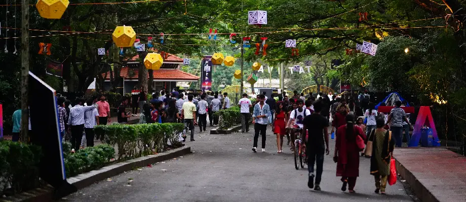
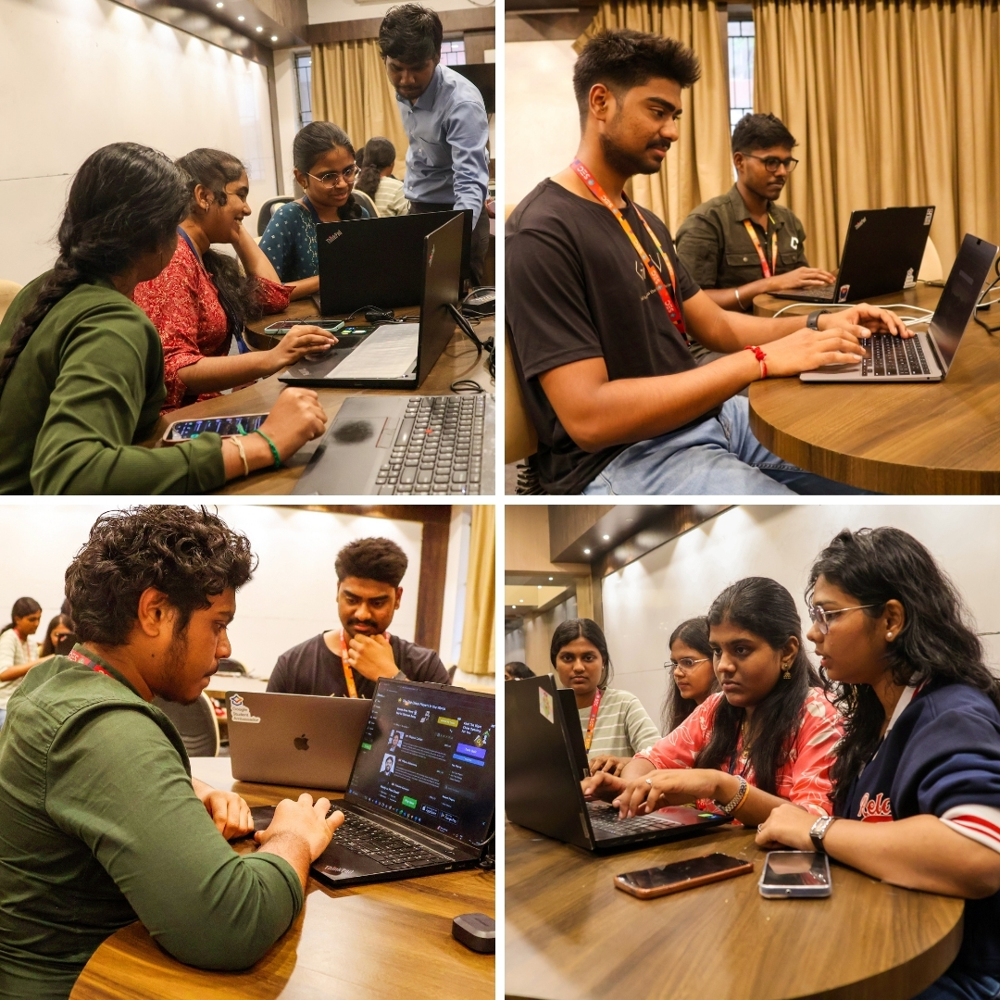
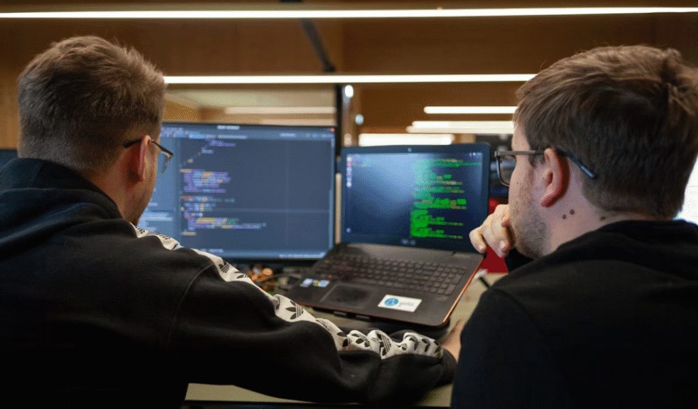

EXPLORE
Technical Events
Innovation, Technology, and Practical Learning
Technical events play a crucial role in enhancing problem-solving skills, logical thinking, and innovation among students. These events encourage the practical implementation of theoretical concepts learned in classrooms.
Our college organizes various technical events throughout the academic year, including an annual Tech Fest, national-level hackathons, coding contests, robotics challenges, and technical workshops guided by industry experts.
Major Technical Events Conducted
- Annual Tech Fest
- Inter-College & National Hackathons
- Coding and Debugging Contests
- Robotics and IoT Challenges
- Paper Presentations and Technical Quizzes
Highlights of Past Technical Events
|
 |
Annual Tech Fest – April 2025The Annual Tech Fest showcased student innovation through project exhibitions, expert talks, and competitive events across departments. |
|
 |
24-Hour Hackathon – March 2025Students worked in teams for 24 hours to build real-world solutions, enhancing creativity, teamwork, and time management skills. |

|
Robotics Challenge – February 2025Students designed and programmed robots using electronics and coding concepts, gaining hands-on experience. |
|
 |
Coding Contest – January 2025Coding contests tested students' logical thinking and programming skills in C, C++, Java, and Python. |
Technical Achievements
| Event | Year | Achievement | Level |
|---|---|---|---|
| Smart India Hackathon | 2024 | Winner | National |
| CodeFest Hackathon | 2023 | Runner-Up | State |
Benefits of Technical Events
- Enhances technical and analytical skills
- Encourages innovation and creativity
- Improves teamwork and leadership
- Prepares students for industry challenges